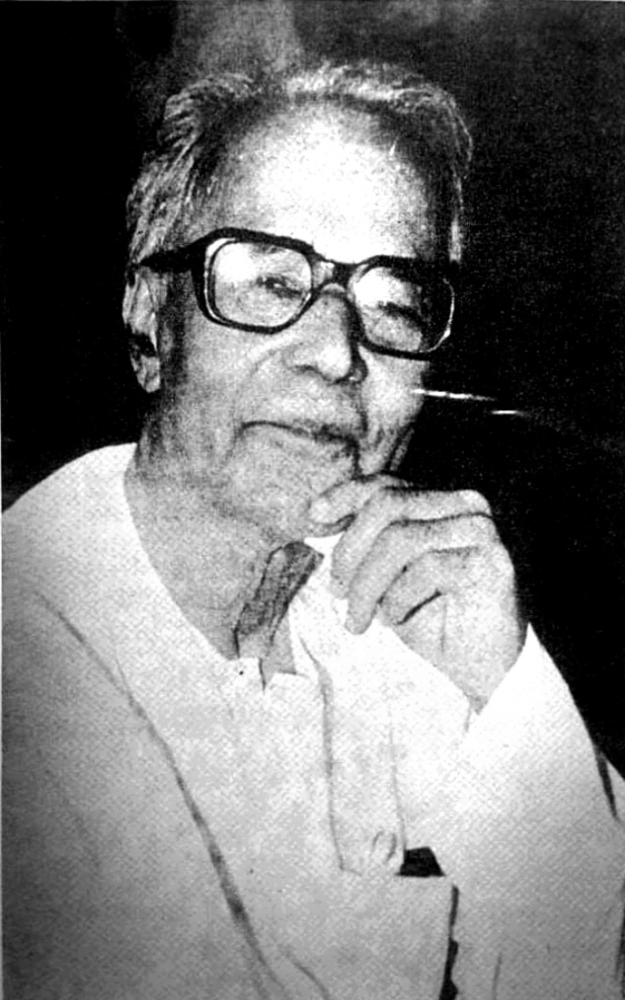

Ganesh Ghosh: The Armoury Raider Who Traded the Gun for the Ballot Box

Portrait: Wikimedia Commons, public domain
Ganesh Ghosh (22 June 1900, 16 October 1994) led the squad that captured the police armoury at Dampara in the Chittagong armoury raid of 18 April 1930, and then lived long enough to sit in the Lok Sabha as a Communist parliamentarian. Few lives in the freedom movement span that whole arc, from armed insurrection to elected office.
He was born in Binodpur, in what is now Magura district of Bangladesh, into a Bengali Kayastha family. In 1922 he enrolled at the Bengal Technical Institute in Calcutta and joined the Chittagong Jugantar party, becoming one of Surya Sen's trusted organisers. In the meticulous plan for 18 April 1930, a six-man group under Ghosh was assigned the police armoury while Lokenath Bal's group took the Auxiliary Force armoury; other squads cut communications, tore up railway lines, and raided the European Club. The raid's memoirs remember Ghosh as its "Field Marshal," and he was deeply involved in the planning and the propaganda leaflets that announced the provisional revolutionary government.
After the raid Ghosh fled to Chandernagore in French territory. On 1 September 1930, Calcutta police commissioner Charles Tegart attacked the hideout; in the gunfight, the young revolutionary Jiban Ghoshal, alias Makhan, was killed, and Ghosh was arrested alongside Lokenath Bal. After the trial he was deported to the Cellular Jail at Port Blair in 1932 and was released only in 1946. In prison he moved toward Marxism, and on release he joined the Communist Party of India, rising to become a leader of the party in West Bengal.
Independent India did not leave him alone either. He was detained from 1948 to 1952 for political agitation, and after the 1964 split in the Communist Party he sided with the Communist Party of India (Marxist). He was elected to the West Bengal Legislative Assembly three times, in 1952, 1957 and 1962, from the Belgachia constituency, and to the 4th Lok Sabha in 1967 from Calcutta South. In 1971 he contested Calcutta South again as a CPI(M) candidate and lost to the 26-year-old Congress candidate Priya Ranjan Dash Munshi, who was winning his first Lok Sabha election.
Ghosh was also the movement's poet. His verses about the fallen comrades were recited by Lokenath Bal during the famous trial and were, by one comrade's account, known by heart to the young men outside the jail. Sources differ on the date of his death, with some giving 22 December 1992, but 16 October 1994 is the most widely cited. He is remembered in Bengal but barely outside it, perhaps because his journey, from insurrectionary to legislator, fits neither the nationalist nor the orthodox left telling of the freedom struggle.
Source: Wikipedia, Hindustan Times
Visuals: Archival portrait
Follow the daily five-post slate on Instagram.
Follow on Instagram